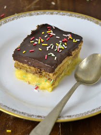
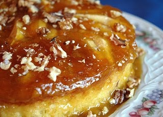

15 recetas de tartas que siempre quisiste hacer en su versión más fácil
 Webedia Trendencias Menú Nuevo Buscar Pinterest Facebook Flipboard Instagram Youtube MODA BELLEZA STREET STYLE ALFOMBRA ROJA TECNOLOGÍA SHOPPING
Partners
Belleza Avène15 recetas de tartas que siempre quisiste hacer en su versión más fácil
Sin comentarios HOY SE HABLA DE Zara Home Primark Netflix Mascarillas Zapatillas Elsa Pataky Element Balenciaga Libros Rebajas Ofrecido por KloraneEmbriagador, regenerador y sostenible: descubre este año el Monoï como base para tu protección solar
Compartir 15 recetas de tartas que siempre quisiste hacer en su versión más fácil
Facebook Twitter Flipboard EmailSuscríbete a Trendencias
Síguenos Twitter Facebook Youtube Instagram RSS Flipboard 08 febrero 2021, 11:18 María YusteSi siempre has querido iniciarte en el mundo de la repostería, el tiempo libre y pausado del verano puede ser el momento perfecto. Y es que, como nos han enseñado los expertos de Directo al paladar , un postre delicioso y elaborado no tiene por qué ser ni laborioso ni complicado de hacer. Todas estas tartas son la prueba de ello. ¿Te atreves a probarlas?
En Trendencias Las 17 tartas y postres más ligeros para saltarte la dieta el fin de semana y disfrutar sin culpaTarta de tres chocolates
La receta de esta tarta de tres chocolates es de las de guardar. Un clásico fácil que gusta a todo el mundo y que sirve tanto para darse un capricho en un día goloso como para lucir nuestras habilidades pasteleras en una fecha especial. Esta versión, además, es muy sencilla y apta hasta para el más inexperto, ya que la textura es a base de cuajados y se obtiene sin horno
Ingredientes
Para 6 personas Chocolate negro (para la primera capa) 150 Nata líquida para montar (para la primera capa) 200 Leche (para la primera capa) 200 Cuajada en polvo sobre (para la primera capa) 1 Chocolate con leche (para la segunda capa) 150 Chocolate con leche (para la segunda capa) 200 Leche (para la segunda capa) 200 Cuajada en polvo sobre (para la segunda capa) 1 Chocolate blanco (para la tercera capa) 150 Nata líquida para montar (para la tercera capa) 200 Leche (para la tercera capa) 200 Cuajada en polvo sobre (para la tercera capa) 1 Leche (para la tercera capa) 200 Galletas tipo María (para la base) 200 FANTASIA 200Cómo hacer Tarta de tres chocolates
Dificultad: Fácil Tiempo total 45 m Elaboración 30 m Cocción 15 m Reposo 6 hSegún los expertos de Directo al Paladar, "puedes preparar esta receta baja en lactosa y azúcar, simplemente tienes que usar como ingredientes, chocolates sin lactosa y sin azúcar".
Tarta de manzana de la abuela
Esta tarta de manzana de la abuela es tan fácil que cualquiera, hasta el más inexperto, la puede hacer. Tampoco se necesitan grandes electrodomésticos, solo una batidora de las de toda la vida. Además, lleva pocos ingredientes. Con esta receta , en 45 minutos es posible disfrutar de una tarta de manzana como las de siempre.
Tarta de manzana en quince minutos
Esta receta de tarta de manzana en quince minutos es una de las que hay que guardar como oro en paño. No sólo es fácil y rápida de elaborar, sino que también es ligera pues no lleva base alguna. Con ella, hasta los más negados para la repostería pueden disfrutar de una deliciosa tarta casera.
En Trendencias Tres recetas de tartas refrescantes con queso y yogur para darte un delicioso capricho este veranoTarta de zanahoria
Esta receta de tarta de zanahoria reduce drásticamente el azúcar de la original. Con estas proporciones, no hace falta más. Su textura húmeda hace que, aunque no seas fan de esta hortaliza, te conquiste al primer bocado. Además, también la hace perfecta para ese algo dulce que tanto apetece después de una comida. Esta deliciosa acompañada de una bola de helado de vainilla, un chocolate a la taza, un café o un té.
Tarta Sacher
Inventada en 1832 por Franz Sacher, un ayudante de cocina que consiguió impresionar con su tarta al príncipe Klemens Wenzel Lothar von Metternich, se sigue sirviendo según la receta original en el Hotel Sacher. No obstante, si no puedes acercarte a Viena esta receta de tarta Sacher con sus dos mitades de bizcocho y una capa de mermelada de albaricoque entre medias es muy parecida.
Tarta de fresa
La fruta roja hace de los pasteles los más vistosos y bonitos. Además, están naturalmente dulces y desprenden un aroma delicioso. El brillo que el glaseado le otorga a las fresas de esta receta de tarta de fresa la hace especialmente deliciosa. Aunque el secreto del éxito reside en buscar fresas de gran calidad, en su punto justo de maduración y de tamaño pequeño.
Tarta de la abuela
Probablemente, la tarta de la abuela es una de las más fáciles de preparar del mundo y casi no se ensucia nada durante su elaboración. Además, para complicarnos aún menos, se puede sustituir la crema pastelera por dos sobres de preparado para hacer flan. Está lista en veinte minutos y después del montaje solo hay que dejar que tome cuerpo en el frigorífico.
En Trendencias Tres tartas de fresa ligeras para disfrutar al máximo este verano sin sumar calorías a nuestra dietaTarta de queso sin horno
De todas las recetas de tarta de queso , quizás esta sea la más rápida y fácil de preparar. Se hace sin horno y hasta los niños pueden participar en su elaboración. Es ideal para rematar una comida, con su sabor tan suave y textura aterciopelada. Sobre todo, si la acompañamos de frutos rojos.
Tarta fácil de chocolate
Su elaboración es sencilla, sus ingredientes básicos y fáciles de encontrar y, además, no necesita horno. En media hora está lista esta tarta de chocolate , aunque después hay que dejar que tome cuerpo en la nevera. La decoración va al gusto de cada persona, pero acompañada de chocolatinas de diferentes tipos y de grosellas, cuya acidez contrasta de maravilla con el dulzor del chocolate, el resultado es espectacular.
Tarta de galletas Oreo y chocolate blanco
La textura suave y fundente de su mousse principal de chocolate y mascarpone hace que esta tarta de galletas Oreo y chocolate blanco guste a todos. Es uno de esos pasteles que siempre son bienvenidos en cualquier casa. Además, al hacerse sin horno, resulta perfecta como opción dulce para aquellos que no disponen de él, o los que no se sienten cómodos vigilando tiempos de cocción. Es posible doblar las cantidades si se necesita una tarta más grande.
Cheesecake de Nutella
Esta receta de cheesecake de Nutella es de Nigella Lawson, la popular y mediática cocinera británica. Lleva pocos ingredientes y no necesita horno para su preparación. De textura cremosa y sabor suave, esta tarta es un regalo de los dioses para los amantes de las tartas de queso y de la Nutella.
Tarta de chocolate fácil y rápida
Esta tarta de chocolate fácil y rapida se prepara en 15 minutos y no necesita más que de unas horas en el frigorífico para coger cuerpo antes de estar lista para servir. Además, la base de galleta se puede hacer con antelación. También se puede usar chocolate con leche para postres, aunque en ese caso es recomendable prescindir del azúcar para que no quede excesivamente dulce.
En Trendencias Nuestra web favorita de tartas y bizcochos cumple 15 años; estas son nuestras 15 recetas favoritasLa tarta de chocolate más fácil del mundo
Nuestros compañeros de Directo al Paladar tienen la receta de tarta de chocolate definitiva para los días encerrados en casa, ya sea por el coronavirus o por el calor. No solo está deliciosa, sino que se elabora en 15 minutos de manera sencilla (lo que la hace ideal para quienes están ya aburridos de cocinar) y es apta para elaborarla dejando el protagonismo a los más pequeños de la casa.
Tarta helada de café
Esta t arta helada de café es ideal para los días más cálidos del verano. Se puede preparar tanto con Thermomix como sin ella. En ambos casos los pasos a seguir son muy sencillos y no es necesario ser un experto repostero para triunfar con este delicioso postre.
En Trendencias Las 15 recetas de verano más buscadas de Internet y su versión más fácilGalette de manzana
En un ranking de recetas de tarta de manzana fáciles y rápidas de preparar, la primera posición la ocuparía sin duda esta galette de manzana . La base de masa quebrada se hace en un abrir y cerrar de ojos, aunque se puede comprar hecha. Además, el relleno se cuece en el horno, por lo que solo hay que pelar y cortar la fruta, condimentar un poco y ya está lista para montar sobre la base.
Fotos | Unsplash y Directo al paladar.
Trendencias en Instagram
Seguir
Compartir 15 recetas de tartas que siempre quisiste hacer en su versión más fácil
Facebook Twitter Flipboard E-mail Temas Gourmet Recetas de postres RecetasCompartir
Facebook Twitter Flipboard E-mail Comentarios cerrados Temas de interés vestidos de fiesta cortes de pelo Zara Primark Mango Rebajas Bershka libros recomendados 2019 keto juegos en pareja instagram orgasmo squirting InicioPartners
Belleza Avène Alfombra roja Libros y literatura Series de televisión Tecnología Viajes Dietas y Nutrición Rebajas deporte decoración Chiara Ferragni tarta Tendencias BellezaVer más temas
Síguenos Twitter Facebook Youtube Instagram RSS Flipboard E-mail Trendencias TV Lo mejor Equipo editorial Contacta con nosotrosMás sitios que te gustarán
Espinof DecoesferaExplora en nuestros medios
Tecnología Móviles, tablets, aplicaciones, videojuegos, fotografía, domótica Xataka Xataka Móvil Xataka Foto Xataka Android Xataka Smart Home Xataka Windows Xataka Ciencia Applesfera Genbeta Magnet Mundo Xiaomi Videojuegos Consolas, juegos, PC, PS4, Switch, Nintendo 3DS y Xbox 3DJuegos Vida Extra IGN Millenium Entretenimiento Series, cine, estrenos en cartelera, premios, rodajes, nuevas películas, televisión Sensacine Espinof Gastronomía Recetas, recetas de cocina fácil, pinchos, tapas, postres Directo al Paladar Estilo de vida Moda, belleza, estilo, salud, fitness, familia, gastronomía, decoración, famosos Vitónica Trendencias Trendencias Hombre Decoesfera Compradiccion Poprosa Latinoamérica Publicaciones de México Xataka México Directo al Paladar México Sensacine México 3DJuegos México Aviso legal Condiciones de uso Condiciones de uso de cookies Publicidad InicioReciente
Los sombreros de verano más bonitos que tiene Parfois esta temporada y cómo combinarlos Sumamos uno de estos siete geles voluminizadores de cejas con los que las definimos a la vez que las fijamos Por si te lo perdiste 13 paletas multiusos, packs de maquillaje y propuestas mini para ahorrar espacio en tu neceser este verano Nueve muebles de jardín rebajados de Maisons du Monde con los que inaugurar el verano con el mejor estilo De Castañer a Tony Pons estas son las alpargatas más versátiles y apetecibles para nuestros estilismos de verano Lo nuevo de Scalpers para niños habla de minimalismo y naturaleza con tejidos como el algodón rústico y el lino Circuit training, el método con el que Angelina Jolie ejercita todo el cuerpo en una sola sesión (y que huye de la monotonía) Por si te lo perdiste Estas han sido las claves del precioso maquillaje cargado de perlas de la colección Crucero 2022 de Dior Estas son las zapatillas más cómodas y elegantes para construir un look de oficina Hoy Sephora celebra el Happy Day y estos 17 productos son los más apetecibles que hemos encontrado Cómo hacer en casa rollitos de primavera estilo chino para que queden tan buenos como los del restaurante, según los expertos La vuelta de Maroon 5, lo más reciente de Jessie J o lo nuevo de J. Balvin se despiden de la época primaveral Kate Middleton luce un precioso vestido azul cielo de una de sus marcas favoritas Siete pantalones vaqueros de Levi's que nunca pasan de moda y están de oferta para miembros En el reboot de 'Gossip Girl' serán tan importantes los libros como los bolsos: esto es lo que lee la nueva Serena Van Der Woodsen El motivo por el que Elsa Pataky quiere volver a España con sus hijos: "La pandemia ha roto mis planes" en Poprosa Estar guapa por dentro y por fuera: cinco imprescindibles de la semana Faldas largas y midi que funcionan a la perfección con sandalias planas y camiseta blanca Aunque acabe la pandemia y deja de ser obligatoria, ¿se quedará la mascarilla en nuestra nueva vida? Los expertos opinan La colección Bioblender de EcoTools piensa en el medio ambiente al ser biodegradableVer más artículos
Trendencias TV
¿QUÉ ME PONGO?: Guía de básicos o fondos de armario que todos deberíamos tener | TE SIENTA BIEN Los MEJORES Y LOS PEORES ESTILISMOS de los Oscar 2018 | Front Row TRES PEINADOS QUE SON TENDENCIA PARA PELO CORTO | TrendenciasVer más vídeos
Síguenos Twitter Facebook Youtube Instagram RSS FlipboardEn Trendencias hablamos de
Alfombra roja Libros y literatura Series de televisión Tecnología Viajes Dietas y Nutrición Rebajas deporte decoración Chiara Ferragni tarta Tendencias BellezaVer más temas
SubirWebedia
Tecnología
Xataka Xataka Móvil Xataka Foto Xataka Android Xataka Smart Home Xataka Windows Xataka Ciencia Applesfera Genbeta Magnet Mundo XiaomiVideojuegos
3DJuegos Vida Extra IGN MilleniumEntretenimiento
Sensacine EspinofGastronomía
Directo al PaladarEstilo de vida
Vitónica Trendencias Trendencias Hombre Decoesfera Compradiccion PoprosaLatinoamérica
Xataka México 3DJuegos México Sensacine México Directo al Paladar México Webedia Xataka Vida Extra Espinof Genbeta Directo al Paladar Xataka Ciencia Trendencias Applesfera Xataka Móvil Decoesfera Vitónica Xataka Foto Trendencias Hombre Xataka Android Xataka Smart Home Xataka Windows Magnet Compradiccion 3DJuegos Sensacine IGN Millenium Poprosa Mundo XiaomiTecnología
Xataka Xataka Móvil Xataka Foto Xataka Android Xataka Smart Home Xataka Windows Xataka Ciencia Applesfera Genbeta Magnet Mundo XiaomiVideojuegos
3DJuegos Vida Extra IGN MilleniumEntretenimiento
Sensacine EspinofGastronomía
Directo al PaladarEstilo de vida
Vitónica Trendencias Trendencias Hombre Decoesfera Compradiccion Poprosa